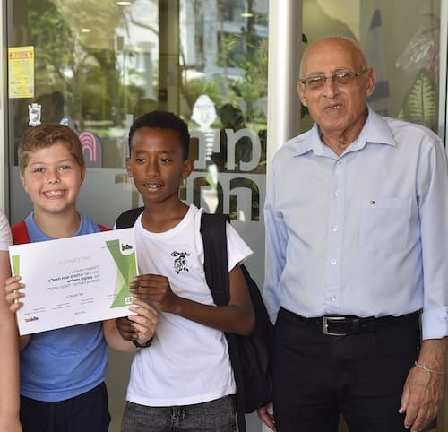

עדלאידע - מקור השם
מקור השם בתחילה נקראה התהלוכה בשם "קרנבל", שהוא שמן של התהלוכות המקבילות לה במסורת הנוצרית. בשנת 1932 הוכרז על תחרות למתן שם קבוע לתהלוכה. מתוך כ-300 הצעות שהוגשו, נבחרה הצעתו של הסופר י"ד ברקוביץ להעניק לתהלוכה השם "עַדְלֹאיָדַע" – שהכוונה בה
היא הגעה לשכרות עד לטשטוש מוחלט ואי-ידיעה; זאת על פי דברי רבא (תלמוד בבלי, מסכת מגילה, דף ז', עמוד ב'): ”מיחייב איניש לִבְסוּמֵי בפוריא עַד דְלֹא יָדַע בין ארור המן לברוך מרדכי” (ארמית: חייב אדם לשתות לשוכרה בפורים עד שלא ידע להבחין בין המן
הארור למרדכי המבורך), ועם רכיב הומופוני השומר משמעות וצליל של הסופית היוונית "-יאדה".[17] בין המציעים האחרים היו חיים נחמן ביאליק, שהציע את השם "פּוּרָה", שאול טשרניחובסקי, שהציע את השם "אסתורת", ואברהם שלונסקי, אשר הציע את "צהלולה"
תהלוכת פורים הגדולה במדינה מתקיימת מידי שנה בעיר חולון והיא מהווה שיאה של פעילות קהילתית וארגונית המתרחשת במהלך השנה ומתעצמת לקראת החג. בתהלוכה, אשר מתמקדת בכל פעם בנושא מרכזי שונה, נוטלים חלק אלפי צועדים, ביניהם: תלמידי בתי הספר בחולון, משתתפי החוגים
במרכזים הקהילתיים ובמרכזי התרבות והספורט, להקות של מתעמלים, פעלולנים ואקרובטים, קבוצות מנגנים ורקדנים, קבוצות תיאטרון רחוב, וכמובן מיצגי ענק ססגוניים, המהווים את החלק המרגש והמרשים במיוחד. לצד הצועדים מחולון משתתפים בעדלאידע צועדים אורחים
מרחבי הארץ ולעיתים אף מהעולם. העדלאידע צועדת לאורך רחובותיה המרכזיים של חולון לעיני מאות אלפי צופים מכל הגילאים. לרוב מסתיימת הצעדה במופע ובמסיבת רחוב צבעונית ועליזה במיוחד ברחבה שמול העירייה. מתום העדלאידע ועד לסיום חג הפורים מוצבים ברחבת
המדיטק המיצגים שהשתתפו בתהלוכה להנאת העוברים והשבים.
כחלק מההכנות לעדלאידע מתנהל בכל שנה תהליך חשיבה בהשתתפות כלל הגורמים בעיריית חולון ובחברות הבת העוסקות באירועים, תרבות, פנאי וספורט. בסופו של התהליך נבחר הנושא המרכזי המתאים לאותה שנה. הקבוצות השונות הנערכות לעדלאידע נרתמות לעבודה יצירתית, לחזרות ולאימונים
סביב אותו נושא מרכזי. במרכז לתיאטרון בובות חולון נלמדת אמנות הקרנבל במסגרת לימודי תעודהנפתח בחלון חדש. התוצרים מהווים חלק מרכזי בתהלוכת העדלאידע.
קצת על ראש העיר - מוטי ששון


מוטי ששון נולד וגדל בחולון והוא בוגר בית הספר היסודי 'ביאליק' ותיכון 'קוגל'. את שנות ילדותו העביר ששון במשחקים בין דיונות החול בעיר. הוא מכיר כל רחוב וסמטה בעיר ונוהג להתחיל את יום עבודתו בצעידה רגלית ברחבי עירו האהובה. לששון תואר ראשון בשפה ובספרות
ערבית והיסטוריה של המזרח התיכון מאוניברסיטת תל אביב ותואר שני במנהל עסקים מהאוניברסיטה העברית בירושלים. מוטי ששון הינו ראש העיר הוותיק ביותר בישראל והוא מכהן בתפקיד זה משנת 1993. במקביל הוא משמש כיו"ר מועצת המנהלים בשלוש חברות בת עירוניות,
העוסקות בתחומי הבנייה והפיתוח, הבילוי והבידור ובתחומי התרבות כגון תיאטרון, מוסיקה ואמנות. במהלך כהונתו כראש העיר הוביל ששון את חולון להישגים משמעותיים ולהכרה ציבורית כעיר מנוהלת היטב, יוזמת ומובילה בשורה של תחומים, המציעה איכות חיים
גבוהה לתושביה ומהווה מוקד עניין למבקרים מהארץ ומהעולם. תושבי העיר נהנים ממוסדות חינוך, תרבות וספורט חדישים, פארקים וגנים ציבוריים לרוב, רשת כבישים מסועפת, מרכזי קניות מודרניים, בנייני מגורים ברמה גבוהה ואזור תעשייה מהגדולים בישראל.
כתוצאה מעשייה זו ביססה חולון את מעמדה כעיר הילדים של ישראל.